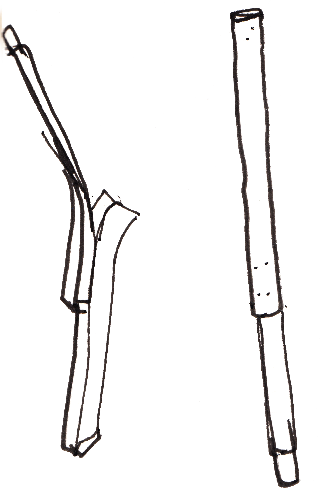
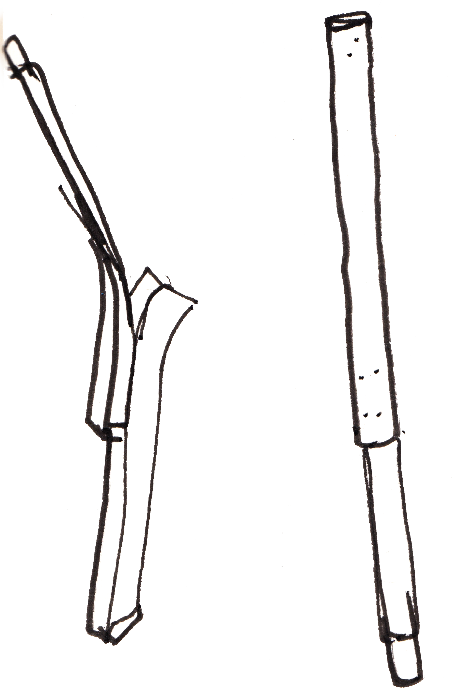
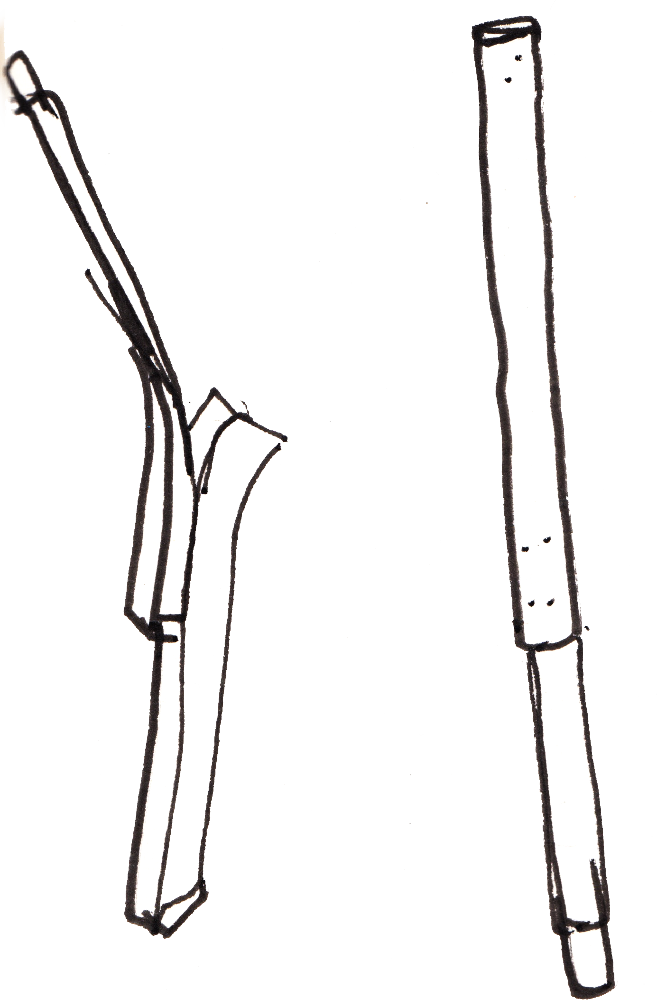

2024
Artek en traits
drawings
2024
Artek en traits
drawings
 

Louise Dousset
2024
Artek en traits
drawings

2024
Paimio sanatorium
research, paintings
2024
Paper lamps
object
2024
Angeli's the light
printing

2024
Montjoi Institut's first edition
book making, graphic design
In collaboration with Thea Brochard, Ward Lauwers, Xander Maclaren, Nathan Raccah et Perle Venzal.
Montjoi Institut's website
2023
The day a poor form became rich
object

"The day a poor form became rich" is a tiny-scale project using waste material in an act of revaluation.
The initial intention was to understand the mechanism behind the industrially produced aluminium clip through the practice of reproducing it, based on a broad and heterogenous survey of existing metal clips.
A evolving range of clips are made from aluminium waste using only the techniques available in their given production context. Each produced clip follows dimensions drawn from ISO paper standards, allowing for simplified calculations, appealing proportions, and the possibility of an array of scales
Functionally, the clips attach to surfaces, work as display devices for holding papers, and can clip onto each other to build lightweight structures. The clips also work as tools for assembling further clips — holding springs to metal plates while fastening zip ties and acting as benchmarks for placement of holes and indentations on the plates.
On a representational level, the clips exemplify the idea that developing things at one scale means developing them on all scales.
For more click here
2023
8 frames a page
drawings

2023
Kyocera
printing, book making


"Kyocera" started from a fascination for printing as a medium and for "obsolete" office printers as machines to find, repair, and use. Paper was bought cheaply from thrift stores and flea markets or acquired through contributions of old stock from businesses and schools. Access to printers in institutional settings is often indirect: fees, restrictions around material type and format, and access control are impediments to experimentation. "Kyocera" is an attempt to make a seemingly hard to access tool more accessible. The aim is to create proximity with and through the practice of printing and producing books.
2023
Anonymous Artefacts
documenting, printing,

2023
Faire-part
graphic design
2022
Barcelona
typeface

Typeface inspired by vernacular signage in Barcelona.
2022
l'Ouvroir
graphic design
2021
Erratic
typography, animation
Erratic was the result of a meticulous exercise of selection and substitution, based on the Baskerville typeface. The attempt was to highlight the signifi- cant elements of a typeface and the essence of its recognition. Once the significant parts were chosen, they were used as a base for exploring multiple ways of relating these fragments with one another.
2021
Unwitting encounters
filming, documenting
hand coded website